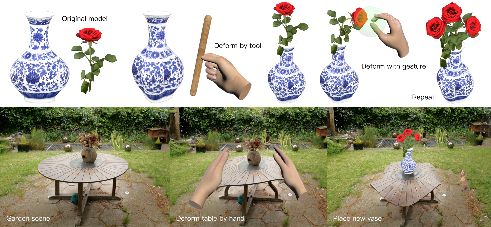
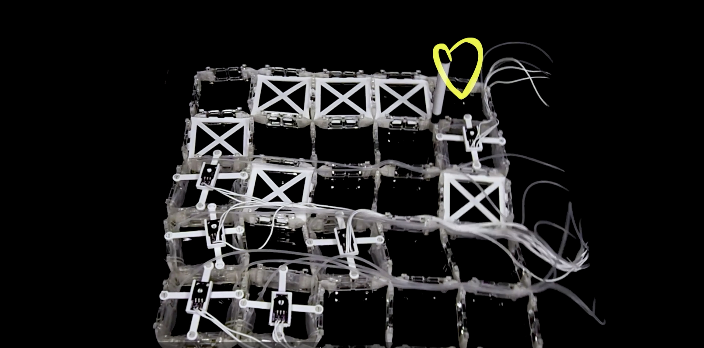

Physics-simulation-driven re-editing of AI-generated 3D content

VR-Doh: Hands-on 3D Modeling in Virtual Reality
Zhaofeng Luo*, Zhitong Cui* (equal contributions), Shijian Luo, Mengyu Chu, Minchen Li
ACM Transactions on Graphics (SIGGRAPH), 2025
